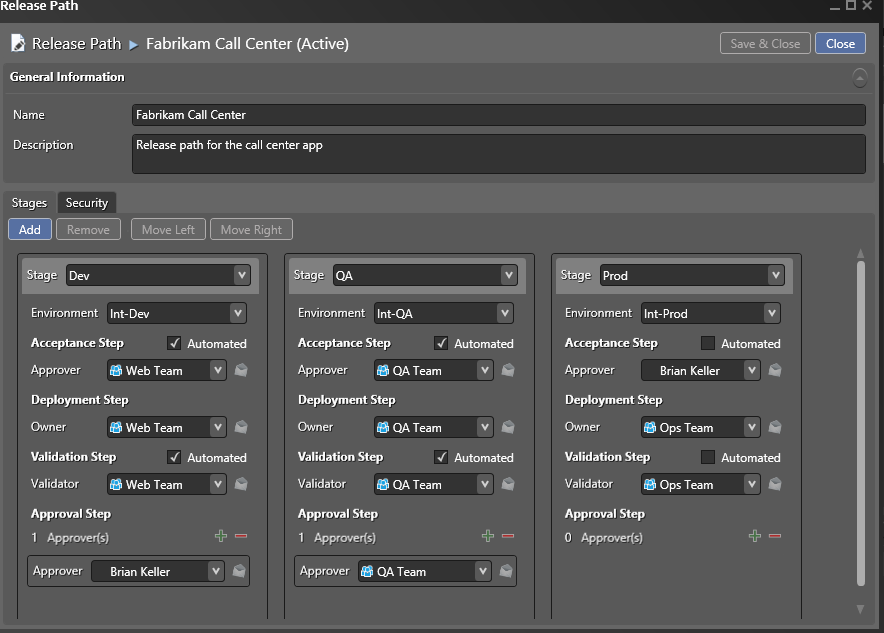
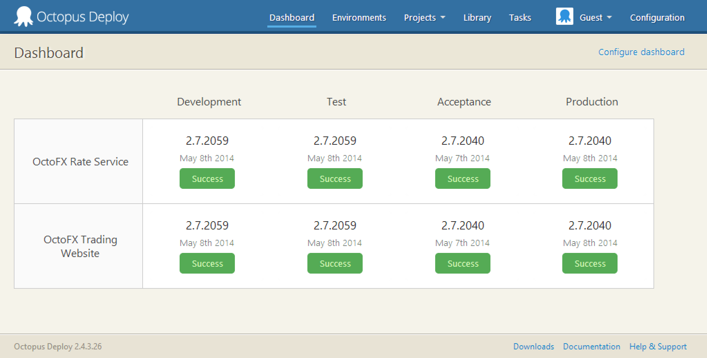
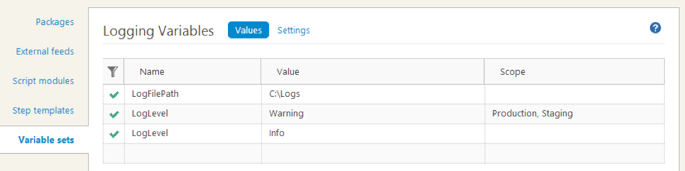
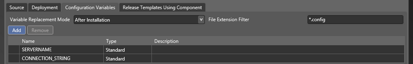

Deployment Managers
andy davies


<LogFilePath>c:\local-logs</LogFilePath>

<LogFilePath>__SERVERNAME__</LogFilePath>

Me: Why should I use your tool over Octopus?
RG: Do you like Octopus?
Me: Yes.
RG: Use that then. Our tools can interact with it.
$6,200.00 per release manager client
$620.00 per processor per target server